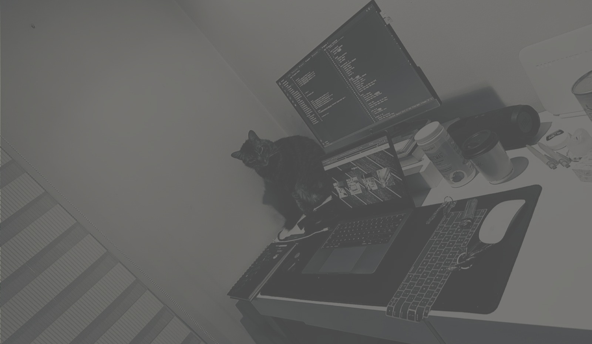
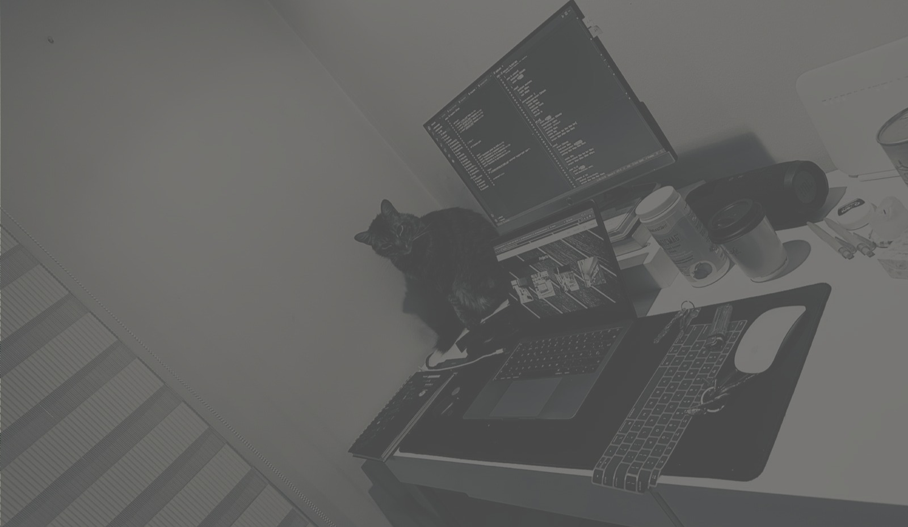

William Taque
Desarrollador Web de profesion, con amplios conocimientos en diferenetes tecnologias. Me destaco por mi facil comunicacion con clientes para plasmar sus necesidades en su sitio web, posicionandolo en el mundo digital.
Desarrollador Web de profesion, con amplios conocimientos en diferenetes tecnologias. Me destaco por mi facil comunicacion con clientes para plasmar sus necesidades en su sitio web, posicionandolo en el mundo digital.
